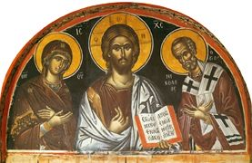

Nicholas is Chosen Bishop
Part 2
In his new post as bishop, Nicholas was known as an
image of gentleness, kindness and love towards all people. He spent his nights
in prayer, and gave a kind welcome to everyone who came to him.
Nicholas earned a reputation as a person of compassion and conscience, maintaining his firm witness for the Lord Jesus Christ, especially during the time of persecution of Christians under the emperor Diocletian (284-305).
The ancient writers stressed Bishop Nicholas’ zeal and his virtues that became even more outstanding in his new position. He practiced the severest asceticism, eating only once a day, in the evening. All day long he spent in labor proper to his office, listening to the requests and needs of those who came to him. The doors of his house were open to all.
According to Robert Wace, Nicholas healed great
numbers of the sick from serious infirmities and freed many from evil spirits.
He was kind and courteous to everyone – to orphans
he was a father, to the poor a merciful giver, to the weeping a comforter, to
the wronged a helper, and to all a great benefactor. He would appear all over
the city on a white horse offering help to anyone in difficulty, then quietly
disappear without waiting for thanks.
He always loved the sailors who lived so dangerously
on the sea. Without their ships, people everywhere would be without food and
other goods they carried for trade.
He was especially concerned that families had enough
to eat and a good place to live, that children got ahead in life, and that old
people lived out their lives with dignity and respect.
For example, Bishop Nicholas purchased a rug from a
poor street vendor for an inflated price and then gave the rug to the vendor’s
wife as a gift. Thus, the couple gained financial help and retained their
property. This act shows Nicholas’ sensitivity to human dignity.
Such are the works of God with which the Lord
magnified His servant. The fame of them spread everywhere, as on wings, it
reached across the sea and spread throughout the world, so that there
was no place where people didn’t know of the great and wonderful miracles of
Bishop Nicholas, which he wrought by the grace given him by
the Almighty Lord.
Throughout the ninth century, Nicholas’ life served
as the subject for laudatory speeches by leading religious figures. Before 826,
Joseph the Hymnographer and Theodorus the Studite composed what is believed to
be the oldest hymn to the Saint. It is said that no fewer than 527 Latin hymns
were composed and sung in his honor.
The image of St. Nicholas is found more often than
that of any other Saint on Byzantine seals and he is said to have been
represented by Christian artists more frequently than any Saint except the
Virgin Mary has. Renaissance painters depicted him seated on his white horse,
resplendent in colorful embroidered robes and miter, carrying his golden
crosier.
Several writers claim that more churches have been
named for St. Nicholas than any of the apostles of Jesus. There were 60
churches dedicated to St. Nicholas in the city of Rome alone, 300 in Belgium,
40 in far-off Iceland, and in England, there were 446, more than twice the 204
dedicated to St. George.
Furthermore, historians find evidence of more than
two thousand chapels, hospitals, and monasteries named after St. Nicholas by
the end of the fifteenth century. Outside Italy, the chief centers from which
the devotion spread were in Normandy, northern France, Flanders, the banks of
the Moselle and the Rhine, between the Weser and the Elbe, along the Vistula,
in the valley of the Danube, in the Tyrol, along the coasts of England, distant
Iceland, the Baltic, and Scandinavia; not to mention the Slavic countries.
The churches dedicated to Saint Nicholas in Catholic
countries are especially dear to people who make their living out of the sea. There
is hardly a seacoast in any Roman Catholic country that does not have a chapel
dedicated to him.
Sailors and fishermen when ashore frequent them, and
if they have just escaped from any of the perils of the deep they show
gratitude to their patron by hanging up on the church walls what are known as
votive pictures. These are either prints of the Saint or sketches, rudely drawn
by local artists, which represent the danger that the sailors had run and the
manner in which they had escaped. Often a figure of Saint Nicholas appears in
the darkened heavens to calm the fears of the imperiled mariners.
His beneficent acts have flowered in legendary story
and have found fruition in universal popular customs animated by the same
spirit of kindness that pervaded the whole life of the Saint. Probably
the life history of no one person – save that of Jesus Christ Himself – has
been so intimately woven about human custom and human life as that of St.
Nicholas.
Thought to Ponder: Though we don’t possess a
single written work by him, St. Nicholas has his place alongside the Fathers of
the Church; the memory of his kindnesses alone have assured him of equal glory
with St. John Chrysostom and St. Basil the Great!
Thought to Discuss around the Dinner Table: How can we follow the
example of St. Nicholas, so that our entire lives are one continuous witness to
our Lord Jesus Christ and the love of God that reaches out to all?

Let us pray: Let your continual mercy, O
Lord, enkindle in Your church the never-failing gift of charity, that,
following the example of Your servant Nicholas of Myra, we may have grace to
deal in generosity and love with children and with all who are poor and
distressed, and to uphold the cause of those who have no helper; for the sake
of Him Who gave His life for us, Your Son our Savior Jesus Christ, Who lives
and reigns with You and the Holy Spirit, one God, now and ever.
Almighty God, Who in Your love gave to Your servant Nicholas of Myra a perpetual name for deeds of kindness on land and sea: Grant, we pray, that Your Church may never cease to work for the happiness of children, the safety of sailors, the relief of the poor, and the help of those tossed by tempests of doubt or grief; through Jesus Christ our Lord, Who lives and reigns with You and the Holy Spirit, one God, for ever and ever. Amen.
Nicholas is Chosen Bishop
Part 2
“This
dignity and this office demand different usages, in order that one should live
no longer for oneself but for others.” (St. Nicholas)
By his good deeds Nicholas was like a mirror for his flock
and, according to the word of the apostle, was “... an example to the believers
in word, in conduct, in love, in spirit, in faith, in purity.” (I Timothy 4:12 NKJV)